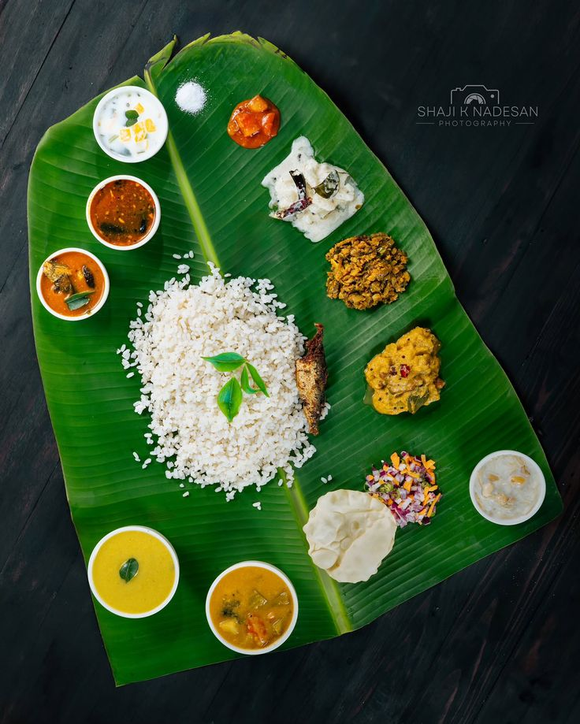

Banana leaf rice is a traditional South Indian dish where white rice or biryani is served on a rectangular sheet of banana leaf alongside an assortment of curries, vegetables, pickles, pappadam, and sambar. Instead of using plates, the rice and side dishes are placed directly on the leaf, which is often lightly heated over an open flame to give a subtle, aromatic fragrance to the food.